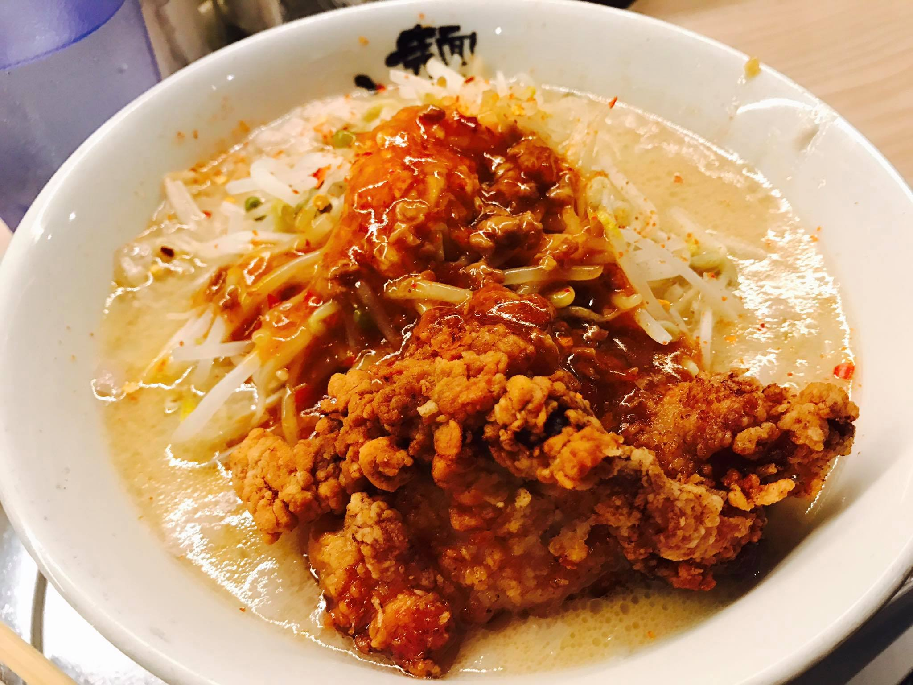
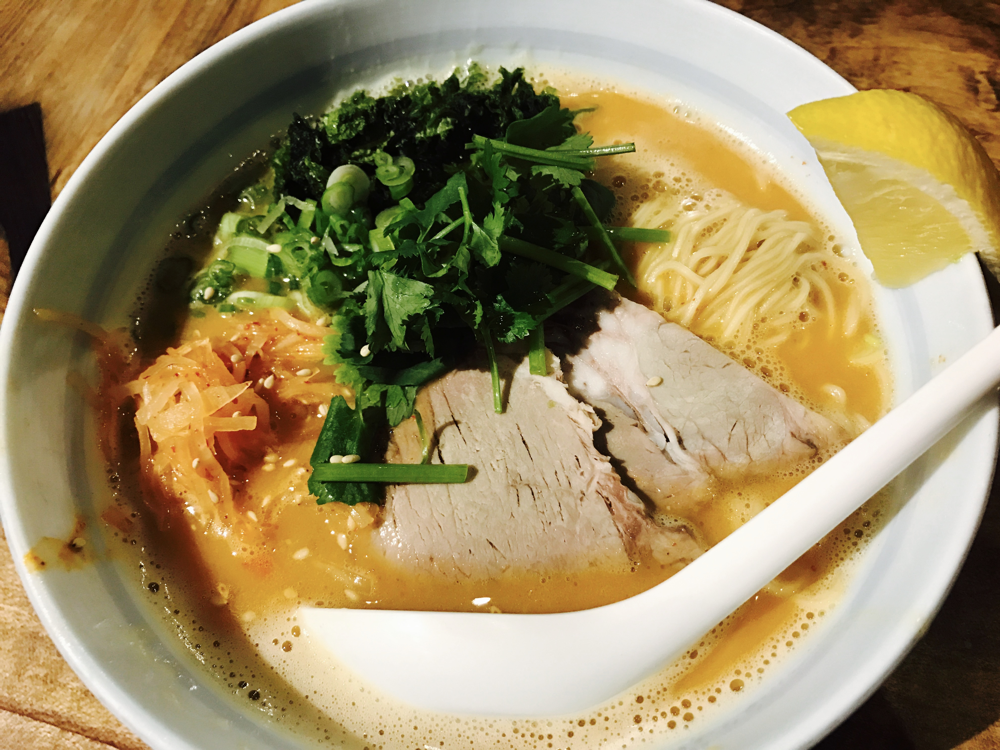
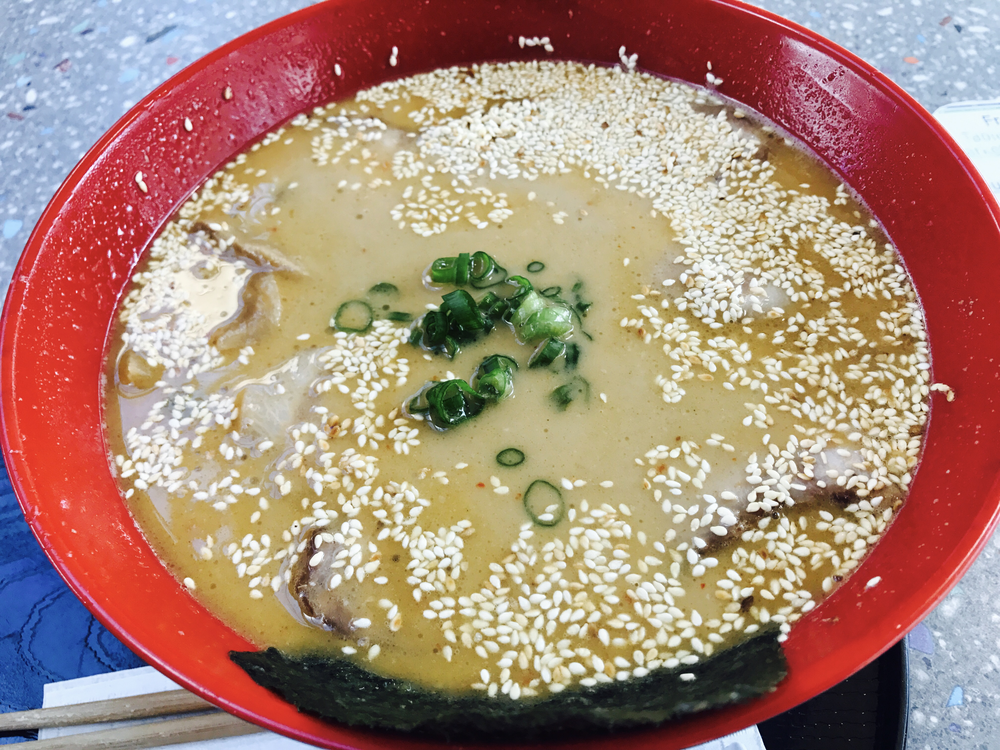
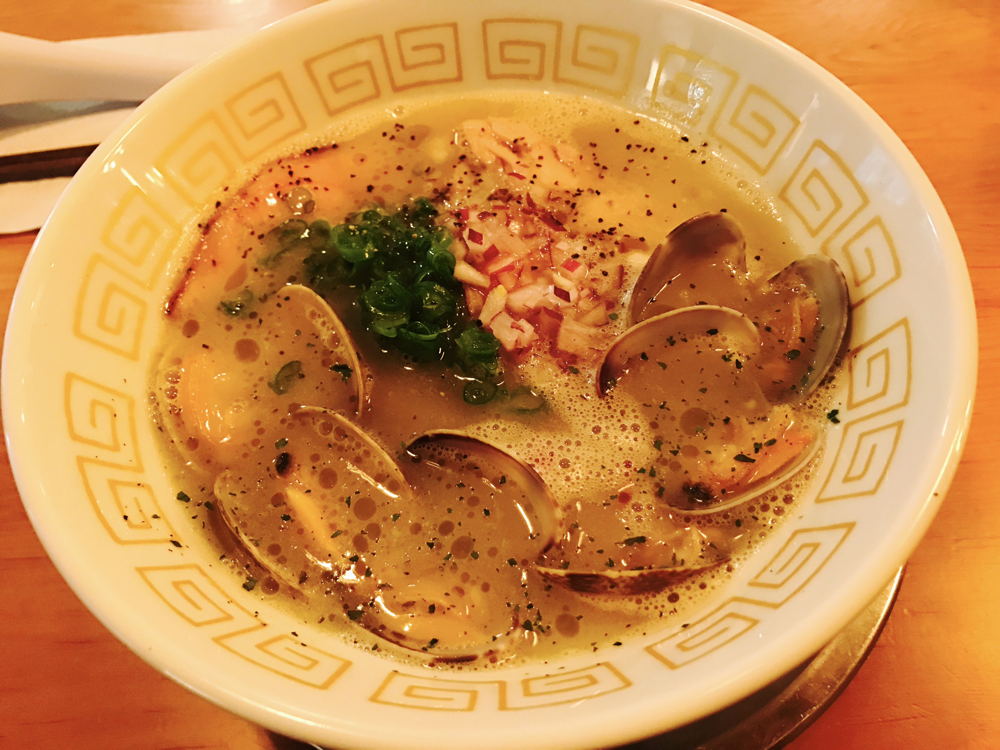

Written on 10-20-2017
Ramen has always been one of the most popular comfort food in Japan. Having that one delicious, warm bowl of ramen in a short span of time for a cheap price makes the day of millions of city folks in metropolises such as Tokyo and Osaka. Recently, there has also been a boom in ramen culture within Vancouver for the same reason. In downtown ramen shops or the famous ramen street around Robson st. area where many ramen shops are located, long lineups for ramen restaurants that persist for at least 30 minutes are not uncommon at lunch and dinner times. With so many shops to choose from, you might ask: which ramen place should I go to? Well, there are so many varieties of ramen available here, from light soup to rich soup, tonkotsu (pork bone soup) stock to tori (chicken soup) stock, thin noodles to thick noodles, that it all comes down to your preference what type of ramen you would like. However, here I will introduce top 5 ramen restaurants in Vancouver and their specialty ramens that you should try in order to experience authentic, unique and delicious ramen. So here we go!
5) Ramen Gojiro – Spicy Karaage Ramen
Not having a stomach as big of as the size of their giant ramen, I went with restaurant’s recommended regular size spicy karaage ramen. Soup topping was very simple: bean sprout and karaage (deep fried chicken) topped with homemade spicy sauce. But the first sip of the soup certainly surprised me - it was made from with both chicken and pork bone stock, which gave the soup a savoury flavour. However, even with the karaage added, the soup did not came across as being too rich to enjoy. The balance was well maintained and the thick noodle that they used also worked nicely with the rich soup. The regular size was just enough to fill me up pleasantly and I definitely recommend the ramen for anyone who is down for a monstrous, delicious bowl of ramen.
4) Marutama Ramen – Aka Ramen
Marutama Ramen is a ramen shop which originated from Kawaguchi, Japan famous for their rich and creamy chicken broth (tori paitan soup base) and its selection of an unique ingredient: aosa, or sea lettuce imported from Japan. With shops opened in Japan, Singapore, Malaysia, Indonesia and Australia, Marutama has certainly made its name here in Vancouver as well. The first impression that struck me as I walked in the shop was their decor, which had both modern and traditional elements that made my stay very comfortable.
As a fan of spicy ramen, I ordered their aka ramen, or red spicy ramen. The taste of this ramen is very unique and unlike other ramen stores I have went. It came with its signature topping, aosa, as well as other unexpected ingredients such as cilantro and lemon usually not found in ramen. The richness of chicken soup and flavor of the sea from aosa was strongly present, but the usage of cilantro and lemon actually cut down the overall richness so that the soup could be fully enjoyed without feeling sick afterwards. There was also a nice kick of spice from the chilly powder they have added to the soup, and the soup flavors have been fully immersed in Marutama’s homemade thin noodle. Overall, Marutama ramen is very modern in terms of its topping selection and would be best enjoyed when you crave for its rich, creamy chicken soup and heavy flavors.
3) Hida Takayama Ramen – Goma Tonkotsu Ramen
Hida Takayama Ramen is a small ramen shop located at the corner of the 2nd floor food court at Robson Public Market. It is one of the more hidden, hard-to-find places that would usually not attract attention - yet it has a score of 4.5 on Yelp! I could not help but wonder why such a ramen shop would receive a high rating despite not having the best location, and the curiosity drove me to the ramen shop. After the visit, I must say that it was worth finding the shop and definitely a place recommended for any ramen lover.
At the shop, I ordered their Goma Tonkotsu Ramen, as recommended by the staff. A bowl of MSG-free, 3-day boiled pork base soup served with lots of Goma (sesame) added gives the soup a nice, mellow flavor that could not be found in most other ramen places. The shop also handmade their noodles in house using ramen flours, as evident as their flavorful thin noodles which fully absorbed the gentle yet deep flavor of the soup. In addition, 2 generously large pieces of chashu was added to the soup to make up for the entire 715g portion of ramen which only costed me $10 to eat. Despite the portion I was able to gulp down the soup entirely without feeling bloated afterwards. This harmonious combination of goma and light tonkotsu would satisfy anyone who craves for ramen but does not want to intake too much oil in their systems.

2) Ramen Danbo – Original Tonkotsu Ramen
Ramen Danbo is a ramen restaurant which serves its ramen in Hakata-style, a popular style originated in Kyushu, Japan that specializes in the original tonkotsu flavor ramen. At first, I was slightly skeptical about the place because I had the chance to taste authentic Hakata-style ramen during my previous stay in Japan, but trying the ramen there completely changed my mind. Surprisingly, the ramen had many similarities when compared to my ramen experience in Japan and was utterly delicious.
Being a fan of Hakata-style ramen, I chose the original tonkotsu ramen to see how good it is. It came with thin noodles, green onions, thinly-sliced chashu and home-made tare, or special sauce, on top of chashu. The flavor of the pork bone is so immersed within the soup that it feels like you are drinking the pork bone itself while taking sips of the soup. On top of that, thin noodles handmade also absorbed the flavors nicely and are pleasant to slurp down. The soup did not come across as salty or oily like typical ramen, which is similar to Hida Takayama’s ramen in that aspect. However, its rich umami, or flavors, left a strong impression as I did not expect myself able to eat delicious Hakata-ramen in Canada. Perhaps this is one of the most authentic ramen places you could find in Vancouver in terms of its style.
1) The Ramenman – Chicken Clam Ramen
In my opinion, The Ramenman, a shop that may not have the same fame level as Marutama or the same authenticity compared to Danbo, is an underappreciated ramen place that one must try to truly see the beauty behind the its ramen making. Its decor and style of cooking reminds me not of traditional Japanese kitchen, but an Italian-infused restaurant that serves you a high quality bowl of ramen instead of your typical pasta. As I walked into the store in the early evening, I was sat down in the wooden high bar counter and listened to their traditional Japanese music playing in the background. It was a relaxing experience while I waited for my ramen to arrive.
Now you may ask: what did I order there exactly? A bowl of chicken and clam ramen that you could not find anywhere else in Vancouver! Just using chicken stock may be more common, but with clams added it became a whole different beast. A generous amount of 5 clams were added to the soup, all of them perfectly cooked, tender and flavorful. The soup also came with one piece of chicken and pork chashu each (you can choose between one of the two or order both like I did), and they were prepared using the western sous vous method, which refers to a method that cooks the ingredient vacuum-sealed with temperature-controlled water bath for a set amount of time. As a result, meat was done just right (medium to medium-well chashu) to the right tenderness and was further seasoned with black pepper to enhance its flavor. Other toppings also included green onion, shallot, garlic and, guess what, truffle oil! As I dig deeper into the soup flavor, I could really find that Italianness embedded within the soup - rich yet not heavy at all. This savoury soup was then paired with their handmade thin noodles to fully embrace its flavors. Every single element of the ramen was so unique yet they came together as one that it really blew my mind how the ramen chef was able to come up with such a recipe. If you are up for something innovative and delicious at the same time, The Ramenman should be your number 1 choice on the list!
Bookmark my blog or follow me on social media available at the bottom-right corner for more exciting posts!